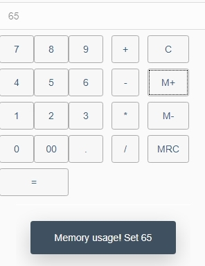

Как запилить реактивность на SAPUI5 — часть 2


С концептом реактивности в SAPUI5 немного разобрались. Осталось углубиться в эту тему чуть-чуть подробнее:
- Разобраться с тем, что же такое expression binding и с чем его едят
- А также ответить на вопрос — как подписываться на изменение viewState и выполнять по этому событию какой-либо код.

Что же такое expression binding и с чем его едят
В прошлой статье я немного рассказывал о реактивности в sapui5 и показывал пример привязки элементов экрана к данным. Если ещё не читали, то добро пожаловать сюда.
В тех примерах байндинги описывались прямо в xml верстке. Примерно в таком формате:
<Control property="{modelName>modelProp}"/>
В этом случае в свойство контрола автоматически будет попадать значение из модели и автоматически обновляться, если данные в модели изменились.
Но это далеко не всё, что мы можем описать прямо во вью в декларативном стиле. Например, в некоторых ситуациях очень нужно именно вычислять значение поля на основании данных в модели, а не просто показывать какое-то значение.
Возможные сценарии:
- Подкрашивать красным строки таблицы, где значение какого-нибудь столбца меньше нуля
- Активировать/деактивировать на основании данных кнопки
- Выводить количество записей в массиве и т.д.
Ремарка: сейчас речь пойдет только про expression binding. Про форматтеры поговорим как-нибудь в другой раз.
И такой функционал вычисления свойств sapui5 нам охотно может предоставить.
<Control property="{= JS_CODE}"/>
Всё это выглядит следующим образом: сразу после открывающейся фигурной скобки вставляем знак равенства, так парсер понимает, что дальше будет какое-то вычисляемое поле на js. Далее можно поместить маленький кусок кода на javaScript, который будет выполняться при вычислении содержимого поля.
(Вставлять туда можно константы, вызовы функций, тренарные?операторы:, регэкспы и прочие прелести жизни.)
Главное — не переусердствовать и не превратить разметку страницы в помойку. :)
Ссылаться на содержимое модели можно с помощью конструкции ${}. Например:
<Text text="{= 'Hello, ' + ${user>name}}">
В данном случае после "Hello, " будет подставлено "name" из модели "user". И если в будущем поле user>name изменится — автоматически произойдет повторное вычисление всех expression bindings, связанных с этим полем.
Ахтунг: Будьте внимательны с boolean-атрибутами!
<Button enabled="{= someFunction( ${model>prop} )}">
В примере выше значение enabled (с типом bool) принимается из результата функции someFunction. Но если по каким-то причинам из функции возвратится undefined, то это значение не будет воспринято как falsy (как во всём остальном js), а мистическим образом конвертируется в true. Так что, конкретно в этом случае, может быть оправдана вот такая грязная и некрасивая запись (за которую вас могут ударить по рукам):
<Button enabled="{= !!someFunction( ${model>prop} )}">
<!-- или -->
<Button enabled="{= someFunction( ${model>prop} ) ? true : false }">
Попробую привести более полные и понятные примеры того, где эти expression bindings можно удобно использовать:
Раскрывающееся меню
Допустим, нам требуется выпадающее меню вот с таким поведением: при нажатии на toggleButton должна меняться иконка и открываться дочерняя ветка меню. Как это сделать, почти не прибегая к javaScript?


Очень просто: использовать для иконок тренарный оператор, который будет вычислять нужную нам иконку. А "дочернюю" ветку меню заключить в блок, который делать видимым тогда, когда свойство TransportEnabled в модели будет = true.
Пример верстки:
<VBox>
<ToggleButton text="Движение транспорта"
icon="{= ${/TransportEnabled} ? 'иконка вкл' : 'иконка выкл'"
pressed="{/TransportEnabled}"/>
<VBox visible="{/TransportEnabled}">
<ToggleButton text="В пути"
icon="{= ${/TransportOnWay} ? 'иконка вкл' : 'иконка выкл'}"
pressed="{/TransportOnWay}"/>
<ToggleButton text="На подходе"
icon="{= ${/TransportApproaching} ? 'иконка вкл' : 'иконка выкл'}"
pressed="{/TransportApproaching}"/>
<ToggleButton text="Прибыл"
icon="{= ${/TransportArrived} ? 'иконка вкл' : 'иконка выкл'}"
pressed="{/TransportArrived}"/>
</VBox>
</VBox>
Калькулятор
Допустим, мы захотели написать простой калькулятор на sapui5. Как нам организовать блокировку кнопки "decimal point", когда точка уже введена пользователем?


Не сильно заметно, но на втором скрине кнопка с точкой заблокирована
Можно писать отдельный метод проверки, а можно сделать вот так:
<!-- Само поле ввода чисел в калькулятор -->
<Input enabled="false" value="{viewState>/input}"/>
<!-- ... -->
<Button text="."
press="appendSymbolToLine"
enabled="{= !${viewState>/input}.includes('.') }"/>
Просто проверять, есть ли в строке ввода точки :)
И напоследок расскажу, как привязывать хендлеры к изменению конкретного свойства в JSON-модели:
Хитрость заключается в том, что если для этого мы будем использовать класс sap.ui.model.Binding, то у нас ничего хорошего не получится. Т.к. хендлер будет запускаться каждый раз, когда изменится вообще какое-либо поле в этой модели.
А для привязки к конкретному полю существует специальный класс: sap.ui.model.json.JSONPropertyBinding.
Давайте прикрутим к нашему калькулятору какой-нибудь хендлер изменения данных в модели. Например, будем рисовать toast-сообщение при записи значения в память нашего калькулятора (при нажатии кнопок M+ и M-)
Для удобства напишем метод, который будет принимать два аргумента: путь до данных в модели, за которыми будем наблюдать, и функцию, которая будет запускаться при изменении этого поля:
addViewStateListener: function(path, callback) {
var oBinding = new sap.ui.model.json.JSONPropertyBinding(this.viewState, path);
oBinding.attachChange(callback);
}
Затем напишем функцию, вызывающую сообщение и привяжем её к данным
memoryUsage: function(event){
sap.m.MessageToast.show("Memory usage! Set " + event.getSource().getValue());
}
// [....]
onInit: function() {
// [....]
// При инициализации привязываем нашу функцию к проперти модели
this.addViewStateListener("/memory", this.memoryUsage);
}
Готово! При нажатии на m+ получаем вот такое сообщение:

Как всегда, код примера вот здесь
Ещё увидимся